Mo - Training Thistle went back out to the parents'
house for a few weeks, so while I was
out
there I got some time in with Mo.
I'm not sure why every time I head out
there
it's blowing gale force winds, but it
was
blowing like crazy.
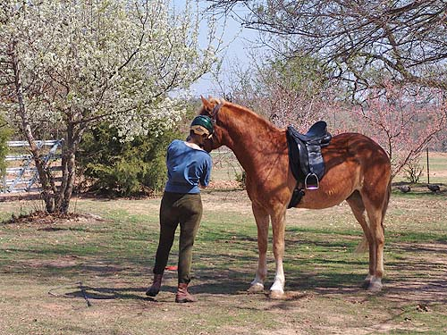
Mo is very laid back and easy to work
with. Every time I'm around him I realize how comfortable he makes me.
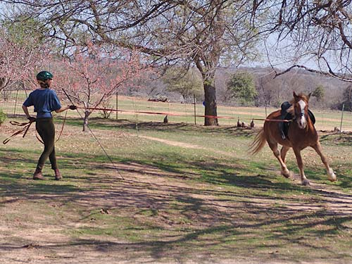
Of course you can't be too relaxed.
He did one round, then decided to try a little canter. I pulled him right
back down and told him to start out with the walk.
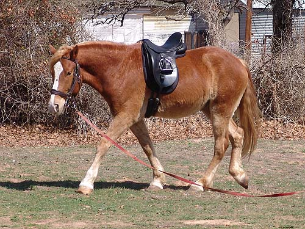
See, that's much better.
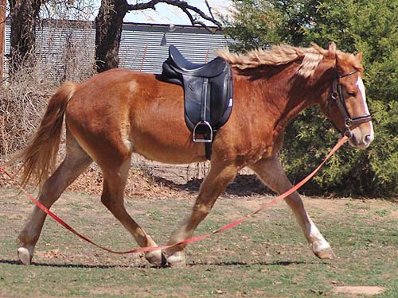
He also offered some nice trot work.
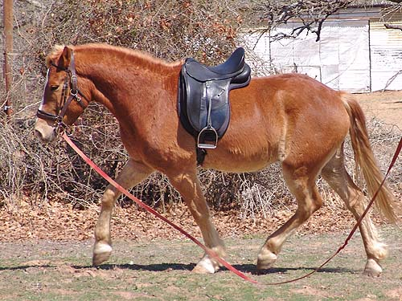
I like how he's put together and how
he moves.
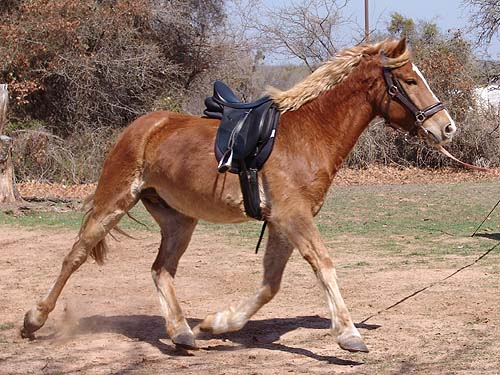
He can move at the trot. Nice suspension.
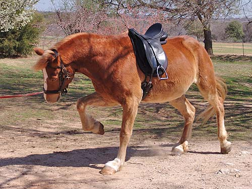
Being a carousel horse and thinking
about picking up the canter.
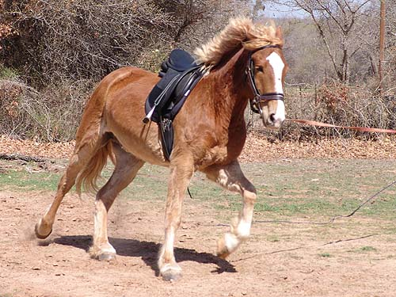
And a bit of the canter.
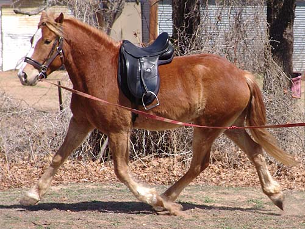
I tried a boucher bit on him this
time. No mouthing and he held it happily. I think we've found a bit for
him.
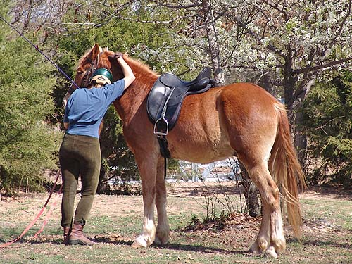
Telling him that lunging made me dizzy.
I also realized it was the heat of the day and wearing the helmet.
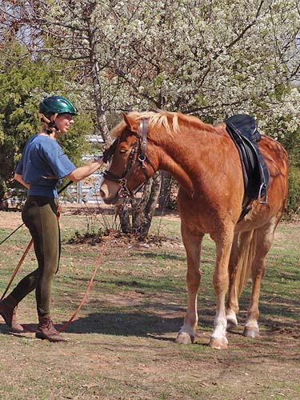
I always pet his spot when I approach
him.
(yes I put this picture in because it
makes me look thin...)
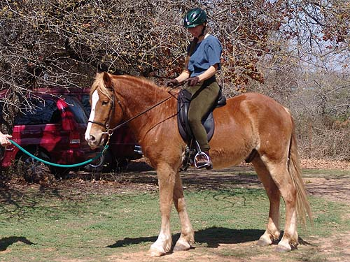
Mounted up and practicing whoa. He
came to me trained under saddle, but I like to go back to the beginning
to make sure there aren't any holes (and to stay safe).
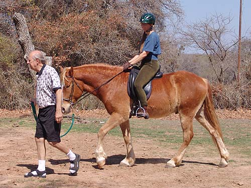
Father obliged me by give me a pony
ride. Father's not my first choice if I'm getting on a horse I don't trust,
but for horses that I don't expect any trouble with, he's there for that
added sense of comfort.
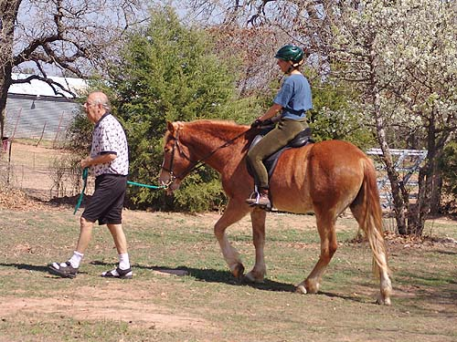
Father was bored, and Mo was obedient.
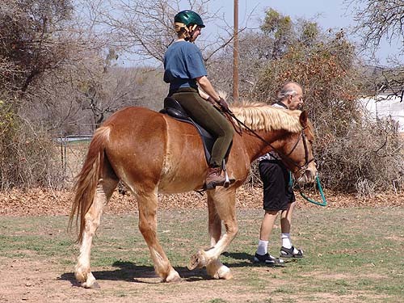
Mo was more resistant to the right
(see his mouth open). He didn't toss his head, but he listened better to
the left.
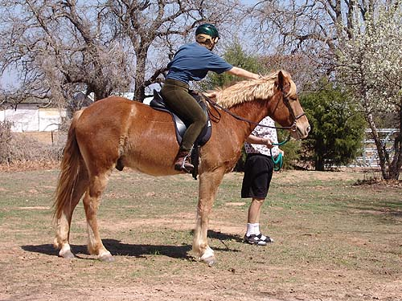
Telling Mo he's good. Hopefully next
time I won't need a lead, and it won't be so awfully windy.